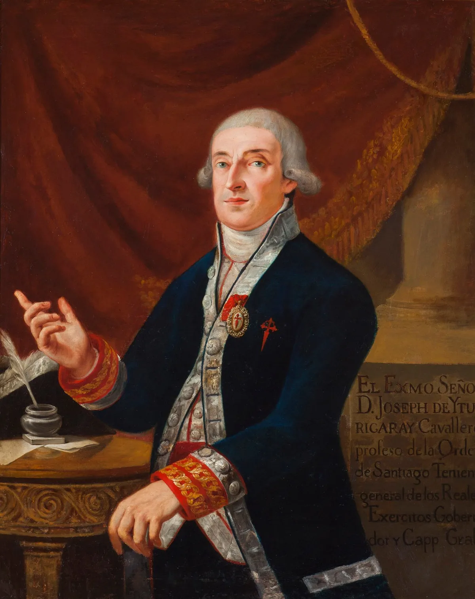

OKpolítico
OKpolítico1810: El estallido del Bajío

Episodio 1 de la serie documental 'Historia política de México, año por año'. Analizamos los acontecimientos del año 1810, desde la toma de posesión del virrey Francisco Xavier Venegas hasta el estallido de la Guerra de Independencia con el Grito de Dolores convocado por Miguel Hidalgo. Exploramos l
Compartir por WhatsApp▶ Ver este video en YouTube y suscríbete
1. El espejismo de la paz colonial
A principios de 1810, la Nueva España se presentaba ante el mundo como la joya más brillante del Imperio español, aportando cerca del 80% de los caudales americanos a una metrópoli asfixiada por las guerras europeas. Sin embargo, tras esta fachada de opulencia minera y estabilidad institucional, el virreinato albergaba una profunda crisis social y política que amenazaba con fracturar sus cimientos. La destitución violenta del virrey José de Iturrigaray en 1808 y la posterior persecución de los criollos reformistas en la Ciudad de México habían clausurado las vías institucionales para canalizar las demandas de autonomía. Para muchos historiadores, este golpe de Estado de los comerciantes peninsulares sembró la convicción de que el cambio político en el virreinato solo podría alcanzarse mediante la conspiración clandestina.
Mientras las élites urbanas intentaban mantener el control, en las provincias del Bajío y el norte se gestaba un malestar silencioso entre los hacendados criollos, los mineros y las comunidades indígenas, estas últimas asfixiadas por los tributos y las crisis agrícolas. La aparente calma novohispana de los primeros meses del año era, en realidad, el preludio de una tormenta social sin precedentes.
✉️ Recibe lo importante del día en tu correo. Suscríbete gratis →2. Un trono vacío y un virrey de hierro
La estructura del poder virreinal sufrió constantes sacudidas durante la primera mitad del año, operando bajo la sombra de la invasión napoleónica en la península ibérica. El arzobispo Francisco Javier de Lizana y Beaumont, quien ejercía como virrey interino con una política de conciliación hacia los criollos, fue finalmente relevado de su cargo debido a las presiones de los sectores peninsulares más intransigentes. Para sustituirlo, la Junta Suprema Central designó a Francisco Xavier Venegas de Saavedra, un militar con amplia experiencia en la resistencia contra las tropas francesas en la batalla de Bailén. Venegas desembarcó en Veracruz con la encomienda de asegurar el flujo de recursos hacia la metrópoli y sofocar cualquier atisbo de insurrección en el territorio novohispano.
El 14 de septiembre de 1810, Venegas tomó posesión formal del virreinato en la Ciudad de México, asumiendo el mando de un aparato administrativo centralizado pero militarmente vulnerable. Apenas dos días después de su investidura, el nuevo virrey se enfrentaría a una crisis de legitimidad que pondría a prueba la autoridad de la Corona en América.
3. Los conjurados de Querétaro
Lejos de la capital, en la ciudad de Santiago de Querétaro, un grupo de criollos ilustrados y militares de carrera comenzó a reunirse bajo el amparo de supuestas academias literarias. Las tertulias se celebraban en la casa del corregidor José Miguel Domínguez y de su esposa, Josefa Ortiz de Domínguez, sirviendo de fachada para organizar un levantamiento armado contra las autoridades virreinales. El liderazgo militar de la conspiración recaía en los capitanes de dragones Ignacio Allende y Juan Aldama, quienes buscaban establecer una junta gubernativa que asumiera el poder en nombre del cautivo rey Fernando VII. Para dar legitimidad popular al movimiento, los militares invitaron al cura de Dolores, Miguel Hidalgo y Costilla, un clérigo ilustrado de gran influencia entre las clases populares del Bajío.
Los conspiradores planearon originalmente iniciar el levantamiento el primero de octubre, coincidiendo con la feria de San Juan de los Lagos, donde pretendían congregar a una gran cantidad de simpatizantes. Sin embargo, la red de espionaje virreinal y las delaciones internas obligarían a los conjurados a tomar decisiones desesperadas a mediados de septiembre.
4. El estallido de Dolores
La conspiración fue denunciada formalmente el 12 de septiembre por el empleado de correos José Mariano Galván, desatando una serie de cateos y detenciones en Querétaro que incluyeron a los propios corregidores. Avisada de la traición, Josefa Ortiz de Domínguez logró enviar un mensaje de alerta a través del alcaide Ignacio Pérez, quien cabalgó a toda prisa para advertir a Allende y Aldama. Aldama recibió la noticia y se trasladó de inmediato al pueblo de Dolores, llegando en la madrugada del 16 de septiembre para informar a Hidalgo y Allende sobre el inminente arresto de todo el grupo. Tras un tenso intercambio de opiniones, el cura Hidalgo tomó la determinación de adelantar el levantamiento, exclamando que no quedaba más remedio que ir a sorprender a los españoles.
Aprovechando la concurrencia de la fiesta patronal de la Virgen de los Dolores, Hidalgo convocó a los feligreses en el atrio de la parroquia la mañana del domingo 16 de septiembre. En su arenga, el cura llamó a levantarse contra el mal gobierno que pretendía entregar el reino a los franceses, ofreciendo la abolición de tributos y sumando rápidamente a cientos de campesinos e indígenas armados con lanzas y machetes.
5. La hoguera del Bajío
El improvisado ejército insurgente avanzó con rapidez por el Bajío, sumando miles de adeptos a su paso por San Miguel el Grande y Celaya, donde Hidalgo fue proclamado Capitán General de los Ejércitos de América. Al ocupar el santuario de Atotonilco, el cura tomó un estandarte con la imagen de la Virgen de Guadalupe, convirtiendo este símbolo religioso en la bandera de la rebelión popular. El 28 de septiembre, las huestes insurgentes llegaron a la rica ciudad minera de Guanajuato, donde el intendente Juan Antonio de Riaño se negó a rendirse y se atrincheró con las familias españolas y los caudales públicos en la Alhóndiga de Granaditas. El asalto al granero se transformó en una carnicería cuando la muchedumbre logró incendiar la puerta principal y masacró a los defensores, cobrando la vida del propio Riaño.
La violencia desatada en Guanajuato y el posterior saqueo de la ciudad horrorizaron a las élites criollas y peninsulares por igual, polarizando el conflicto. En respuesta, el obispo electo de Valladolid, Manuel Abad y Queipo, excomulgó a Hidalgo y a sus seguidores, mientras el virrey Venegas emitía un bando ofreciendo 10,000 pesos por las cabezas de los líderes rebeldes.
6. El Monte de las Cruces y la retirada
Tras tomar Valladolid sin resistencia el 17 de octubre, Hidalgo se reunió tres días después en Charo con el cura José María Morelos y Pavón, comisionándolo para levantar tropas en el sur del país y apoderarse del puerto estratégico de Acapulco. El ejército insurgente, que ya superaba los 80,000 hombres, continuó su marcha hacia la capital del virreinato, ocupando Toluca el 25 de octubre. El 30 de octubre de 1810, las fuerzas insurgentes se enfrentaron en el Monte de las Cruces a las tropas realistas comandadas por el coronel Torcuato Trujillo, quien contaba entre sus oficiales al joven Agustín de Iturbide. A pesar de la disciplina de la fusilería virreinal, la abrumadora superioridad numérica de los rebeldes les otorgó la victoria, dejando el camino abierto hacia la Ciudad de México.
Para sorpresa de Allende y de sus propios oficiales, Hidalgo decidió no entrar a la capital y ordenó la retirada hacia el Bajío, una determinación que los historiadores aún debaten si se debió al temor a una masacre similar a la de Guanajuato o a la falta de municiones. Esta decisión marcó el inicio del declive militar de la primera etapa insurgente, facilitando que el brigadier realista Félix María Calleja reorganizara sus fuerzas.
7. El mundo en 1810
Mientras la Nueva España se desangraba, el continente americano experimentaba una reacción en cadena provocada por el vacío de poder en la península ibérica. En abril, Caracas destituyó al gobernador español instalando una junta autónoma, seguida en mayo por la Revolución de Mayo en Buenos Aires y, en septiembre, por el establecimiento de la Primera Junta de Gobierno en Chile. En España, la resistencia contra la ocupación francesa dio un paso trascendental el 24 de septiembre de 1810, cuando se constituyeron por primera vez las Cortes Generales y Extraordinarias en la Isla de León, Cádiz. Esta asamblea proclamó la soberanía nacional y la igualdad de derechos entre españoles y americanos, sentando las bases del constitucionalismo liberal frente al absolutismo monárquico.
Al mismo tiempo, en el norte de América, los Estados Unidos aprovechaban la debilidad del Imperio español para expandir sus fronteras. En octubre de 1810, el presidente James Madison proclamó la anexión de la efímera República de Florida Occidental, un territorio que se había declarado independiente de España apenas un mes antes tras el asalto filibustero al fuerte de Baton Rouge.
8. El decreto de Guadalajara
Tras sufrir una severa derrota frente a Calleja en la batalla de Aculco, el ejército insurgente se dividió, marchando Allende hacia Guanajuato e Hidalgo hacia Valladolid y posteriormente a Guadalajara. La capital de la Nueva Galicia había sido tomada previamente por el líder popular José Antonio 'El Amo' Torres, facilitando la entrada triunfal del cura de Dolores el 26 de noviembre. En Guadalajara, Hidalgo asumió funciones de jefe de Estado y, el 6 de diciembre de 1810, firmó el histórico Decreto contra la esclavitud, las gabelas y el papel sellado. Este documento no solo abolía la esclavitud en los territorios bajo control insurgente, sino que eliminaba los tributos de las castas y devolvía las tierras a las comunidades indígenas, radicalizando el carácter social del movimiento.
Mientras Hidalgo intentaba legislar, el virrey Venegas buscaba contrarrestar el impacto social de la rebelión publicando decretos que eximían del tributo a los indios leales, intentando mantener la fidelidad de las comunidades originarias. La guerra civil ya no solo se libraba en los campos de batalla, sino en el terreno de la legitimidad política y las reformas sociales.
9. El saldo de la discordia
El año 1810 cerró con un panorama desolador para la Nueva España, marcado por la devastación de sus principales centros mineros y agrícolas en el Bajío. El 26 de diciembre, las fuerzas realistas infligieron una derrota definitiva a los insurgentes en la batalla de Guanajuato (San José de Iturbide), obligando a Allende a replegarse y evidenciando las profundas fracturas tácticas entre la dirigencia militar criolla y el liderazgo popular de Hidalgo. Aquel reino que inició el año bajo la aparente normalidad del orden colonial terminó dividido por una guerra civil multifacética que nadie había previsto en enero. La conspiración de las élites criollas, al verse descubierta, se vio obligada a recurrir a las masas desposeídas, desatando una revolución social que desbordó los planes originales de sus propios iniciadores.
La apelación de Hidalgo a la defensa de la religión y a la figura de Fernando VII sirvió como el único catalizador capaz de unir temporalmente a sectores tan diversos frente al mal gobierno virreinal. Al concluir 1810, el pacto colonial se había roto irremediablemente, y la Nueva España se adentraba en una década de violencia que transformaría su geografía política para siempre.
Sigue viendo
Con información de
Wikipedia — 1810 (es) · Wikipedia — Anexo:México en 1810 (es) · Wikipedia — Independencia de México · Wikipedia — Conspiración de Querétaro · Wikipedia — Grito de Dolores · Wikipedia — Toma de la Alhóndiga de Granaditas · Wikipedia — Batalla del Monte de las Cruces · Wikipedia — Cortes de Cádiz · Wikipedia — Guerra de la Independencia española · Wikipedia — República de Florida Occidental · Memoria Política de México, bando del virrey Venegas · Memoria Política de México, proclama de Venegas (23 de septiembre de 1810) · Memoria Política de México, decreto sobre tributos de los indios · Memoria Política de México, bando del 9 de noviembre de 1810